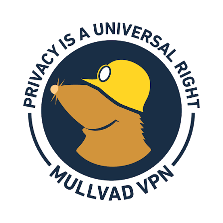

Co je to vlastně VPN?
VPN (Virtuální privátní síť) je technologie, která vytváří bezpečné a šifrované připojení mezi vaším zařízením a internetem. Funguje jako bezpečný tunel, který chrání vaše data před odposlechem a skrývá vaši skutečnou identitu online.
K čemu se VPN nejčastěji používá?
- Ochrana na veřejných Wi-Fi: Šifruje data v kavárnách nebo na letištích, takže je hackeři nemohou zachytit.
- Skrytí IP adresy: Vaše skutečná poloha a IP adresa jsou nahrazeny údaji VPN serveru. Zvyšujete tak svou anonymitu.
- Obcházení geografické blokace: Umožňuje přístup k obsahu (např. streamovacím službám), který je ve vaší zemi běžně nedostupný, tím, že se připojíte přes server v jiné zemi.
- Zabezpečení firemních dat: Zaměstnanci se mohou bezpečně připojovat k firemní síti z domova (Home Office).
